This chapter introduces the on-chip memory architecture of GPUs, the concept of memory-bound applications, and techniques for improving the performance of memory-bound applications. The chapter uses matrix multiplication to illustrate opportunities for reducing the number of global memory accesses. It then introduces the tiling technique by which barrier synchronization is used to coordinate the timing of executing threads for improved locality and reduced global memory accesses. However, the tiling techniques involve additional complexities in boundary checks. The chapter uses matrix multiplication to illustrate the additional boundary checks that are needed for a tiled kernel to be applicable to arbitrary matrix sizes. The chapter concludes with an overview of how usage of shared memory and registers can affect the number of thread blocks that can be accommodated in each streaming multiprocessor.
Memory bandwidth; memory latency; compute to global memory access ratio; memory-bound; throughput; on-chip memory; cache; tiling; locality; strip-mining; shared memory; private memory; scope; lifetime; occupancy
So far, we have learned how to write a CUDA kernel function and how to configure and coordinate its execution by a massive number of threads. We have also looked at the compute architecture of current GPU hardware and how threads are scheduled to execute on this hardware. In this chapter we will focus on the on-chip memory architecture of the GPU and begin to study how one can organize and position data for efficient access by a massive number of threads. The CUDA kernels that we have studied so far will likely achieve only a tiny fraction of the potential speed of the underlying hardware. This poor performance is because global memory, which is typically implemented with off-chip DRAM, tends to have long access latency (hundreds of clock cycles) and finite access bandwidth. While having many threads available for execution can theoretically tolerate long memory access latencies, one can easily run into a situation in which traffic congestion in the global memory access paths prevents all but a very few threads from making progress, thus rendering some of the cores in the streaming multiprocessors (SMs) idle. To circumvent such congestion, GPUs provide a number of additional on-chip memory resources for accessing data that can remove the majority of traffic to and from the global memory. In this chapter we will study the use of different memory types to boost the execution performance of CUDA kernels.
We can illustrate the effect of memory access efficiency by calculating the expected performance level of the most executed portion of the matrix multiplication kernel code in Fig. 3.11, which is partially replicated in Fig. 5.1. The most important part of the kernel in terms of execution time is the for-loop that performs the dot product of a row of M with a column of N.
In every iteration of the loop, two global memory accesses are performed for one floating-point multiplication and one floating-point addition. The global memory accesses fetch elements from the M and N arrays. The floating-point multiplication operation multiplies these two elements together, and the floating-point add operation accumulates the product into Pvalue. Thus the ratio of floating-point operations (FLOP) to bytes (B) accessed from global memory is 2 FLOP to 8 B, or 0.25 FLOP/B. We will refer to this ratio as the compute to global memory access ratio, defined as the number of FLOPs performed for each byte access from the global memory within a region of a program. This ratio is sometimes also referred to as arithmetic intensity or computational intensity in the literature.
The compute to global memory access ratio has major implications for the performance of a CUDA kernel. For example, the Ampere A100 GPU has a peak global memory bandwidth of 1555 GB/second. Since the matrix multiplication kernel performs 0.25 OP/B, the global memory bandwidth limits the throughput of single-precision FLOPs that can be performed by the kernel to 389 giga FLOPs per second (GFLOPS), obtained by multiplying 1555 GB/second with 0.25 FLOP/B. However, 389 GFLOPS is only 2% of the peak single-precision operation throughput of the A100 GPU, which is 19,500 GFLOPS. The A100 also comes with special purpose units called tensor cores that are useful for accelerating matrix multiplication operations. If one considers the A100’s tensor-core peak single-precision floating-point throughput of 156,000 GFLOPS, 389 GFLOPS is only 0.25% of the peak. Thus the execution of the matrix multiplication kernel is severely limited by the rate at which the data can be delivered from memory to the GPU cores. We refer to programs whose execution speed is limited by memory bandwidth as memory-bound programs.
To achieve higher performance for this kernel, we need to increase the compute to global memory access ratio of the kernel by reducing the number of global memory accesses it performs. For example, to fully utilize the 19,500 GFLOPS that the A100 GPU provides, a ratio of at least (19,500 GOP/second)/(1555 GB/second)=12.5 OP/B is needed. This ratio means that for every 4-byte floating point value accessed, there must be about 50 floating-point operations performed! The extent to which such a ratio can be achieved depends on the intrinsic data reuse in the computation at hand. We refer the reader to the “The Roofline Model” sidebar for a useful model for analyzing a program’s potential performance with respect to its compute intensity.
As we will see, matrix multiplication presents opportunities for reduction of global memory accesses that can be captured with relatively simple techniques. The execution speed of matrix multiplication functions can vary by orders of magnitude, depending on the level of reduction of global memory accesses. Therefore matrix multiplication provides an excellent initial example for such techniques. This chapter introduces a commonly used technique for reducing the number of global memory accesses and demonstrates the technique on matrix multiplication.
A CUDA device contains several types of memory that can help programmers to improve the compute to global memory access ratio. Fig. 5.2 shows these CUDA device memories. At the bottom of the figure, we see global memory and constant memory. Both these types of memory can be written (W) and read (R) by the host. The global memory can also be written and read by the device, whereas the constant memory supports short-latency, high-bandwidth read-only access by the device. We introduced global memory in Chapter 2, Heterogeneous Data Parallel Computing, and we will look at constant memory in detail in Chapter 7, Convolution.
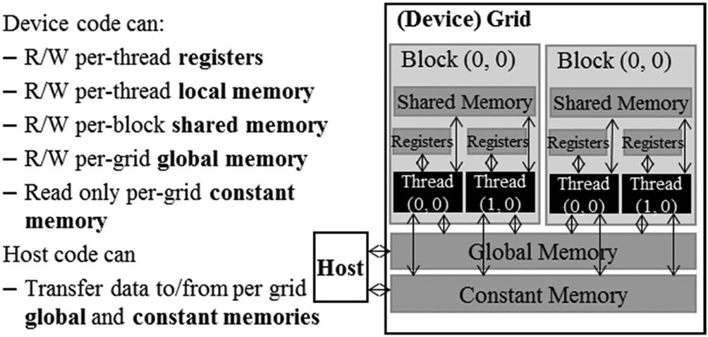
Another type of memory is the local memory, which can also be read and written. The local memory is actually placed in global memory and has similar access latency, but it is not shared across threads. Each thread has its own section of global memory that it uses as its own private local memory where it places data that is private to the thread but cannot be allocated in registers. This data includes statically allocated arrays, spilled registers, and other elements of the thread’s call stack.
Registers and shared memory in Fig. 5.2 are on-chip memories. Variables that reside in these types of memory can be accessed at very high speed in a highly parallel manner. Registers are allocated to individual threads; each thread can access only its own registers (see the “CPU versus GPU Register Architecture” sidebar). A kernel function typically uses registers to hold frequently accessed variables that are private to each thread. Shared memory is allocated to thread blocks; all threads in a block can access shared memory variables declared for the block. Shared memory is an efficient means by which threads can cooperate by sharing their input data and intermediate results. By declaring a CUDA variable in one of the CUDA memory types, a CUDA programmer dictates the visibility and access speed of the variable.
To fully appreciate the difference between registers, shared memory, and global memory, we need to go into a little more detail about how these different memory types are realized and used in modern processors. As we discussed in the “Warps and SIMD Hardware” sidebar in Chapter 4, Compute Architecture and Scheduling, virtually all modern processors find their root in the model proposed by John von Neumann in 1945, which is shown in Fig. 5.3. CUDA devices are no exception. The global memory in a CUDA device maps to the Memory box in Fig. 5.3. The processor box corresponds to the processor chip boundary that we typically see today. The global memory is off the processor chip and is implemented with DRAM technology, which implies long access latencies and relatively low access bandwidth. The registers correspond to the “Register File” of the von Neumann model. The Register File is on the processor chip, which implies very short access latency and drastically higher access bandwidth when compared to the global memory. In a typical device, the aggregated access bandwidth of all the register files across all the SMs is at least two orders of magnitude higher than that of the global memory. Furthermore, whenever a variable is stored in a register, its accesses no longer consume off-chip global memory bandwidth. This will be reflected as an increased compute to global memory access ratio.
A subtler point is that each access to registers involves fewer instructions than an access to the global memory. Arithmetic instructions in most modern processors have “built-in” register operands. For example, a floating-point addition instruction might be of the following form:
where r2 and r3 are the register numbers that specify the location in the register file where the input operand values can be found. The location for storing the floating-point addition result value is specified by r1. Therefore when an operand of an arithmetic instruction is in a register, no additional instruction is required to make the operand value available to the arithmetic and logic unit (ALU), where the arithmetic calculation is done.
Meanwhile, if an operand value is in the global memory, the processor needs to perform a memory load operation to make the operand value available to the ALU. For example, if the first operand of a floating-point addition instruction is in the global memory, the instructions that are involved will likely look like the following example:
where the load instruction adds an offset value to the contents of r4 to form an address for the operand value. It then accesses the global memory and places the value into register r2. Once the operand value is in r2, the fadd instruction performs the floating-point addition using the values in r2 and r3 and places the result into r1. Since the processor can fetch and execute only a limited number of instructions per clock cycle, the version with an additional load will likely take more time to process than the one without. This is another reason why placing the operands in registers can improve execution speed.
Finally, there is yet another subtle reason why placing an operand value in registers is preferable. In modern computers the energy that is consumed for accessing a value from the register file is at least an order of magnitude lower than for accessing a value from the global memory. Accessing a value from registers has a tremendous advantage in energy efficiency over accessing the value from the global memory. We will look at more details of the speed and energy difference in accessing these two hardware structures in modern computers soon. On the other hand, as we will soon learn, the number of registers that are available to each thread is quite limited in today’s GPUs. As we saw in Chapter 4, Compute Architecture and Scheduling, the occupancy that is achieved for an application can be reduced if the register usage in full-occupancy scenarios exceeds the limit. Therefore we also need to avoid oversubscribing to this limited resource whenever possible.
Fig. 5.4 shows the shared memory and registers in a CUDA device. Although both are on-chip memories, they differ significantly in functionality and cost of access. Shared memory is designed as part of the memory space that resides on the processor chip. When the processor accesses data that resides in the shared memory, it needs to perform a memory load operation, just as in accessing data in the global memory. However, because shared memory resides on-chip, it can be accessed with much lower latency and much higher throughput than the global memory. Because of the need to perform a load operation, shared memory has longer latency and lower bandwidth than registers. In computer architecture terminology the shared memory is a form of scratchpad memory.
One important difference between the shared memory and registers in CUDA is that variables that reside in the shared memory are accessible by all threads in a block. This contrasts with register data, which is private to a thread. That is, shared memory is designed to support efficient, high-bandwidth sharing of data among threads in a block. As shown in Fig. 5.4, a CUDA device SM typically employs multiple processing units to allow multiple threads to make simultaneous progress (see the “Threads” sidebar) in Chapter 2, Heterogeneous Data Parallel Computing. Threads in a block can be spread across these processing units. Therefore the hardware implementations of the shared memory in these CUDA devices are typically designed to allow multiple processing units to simultaneously access its contents to support efficient data sharing among threads in a block. We will be learning several important types of parallel algorithms that can greatly benefit from such efficient data sharing among threads.
It should be clear by now that registers, local memory, shared memory, and global memory all have different functionalities, latencies, and bandwidth. It is therefore important to understand how to declare a variable so that it will reside in the intended type of memory. Table 5.1 presents the CUDA syntax for declaring program variables into the various memory types. Each such declaration also gives its declared CUDA variable a scope and lifetime. Scope identifies the set of threads that can access the variable: a single thread only, all threads of a block, or all threads of all grids. If a variable’s scope is a single thread, a private version of the variable will be created for every thread; each thread can access only its private version of the variable. For example, if a kernel declares a variable whose scope is a thread and it is launched with one million threads, one million versions of the variable will be created so that each thread initializes and uses its own version of the variable.
Table 5.1
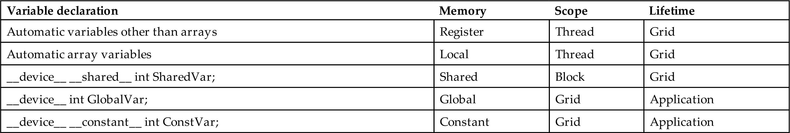
Lifetime tells the portion of the program’s execution duration when the variable is available for use: either within a grid’s execution or throughout the entire application. If a variable’s lifetime is within a grid’s execution, it must be declared within the kernel function body and will be available for use only by the kernel’s code. If the kernel is invoked several times, the value of the variable is not maintained across these invocations. Each invocation must initialize the variable in order to use it. On the other hand, if a variable’s lifetime is throughout the entire application, it must be declared outside of any function body. The contents of these variables are maintained throughout the execution of the application and available to all kernels.
We refer to variables that are not arrays as scalar variables. As shown in Table 5.1, all automatic scalar variables that are declared in kernel and device functions are placed into registers. The scopes of these automatic variables are within individual threads. When a kernel function declares an automatic variable, a private copy of that variable is generated for every thread that executes the kernel function. When a thread terminates, all its automatic variables cease to exist. In Fig. 5.1, variables blurRow, blurCol, curRow, curCol, pixels, and pixVal are all automatic variables and fall into this category. Note that accessing these variables is extremely fast and parallel, but one must be careful not to exceed the limited capacity of the register storage in the hardware implementations. Using a large number of registers can negatively affect the occupancy of each SM, as we saw in Chapter 4, Compute Architecture and Scheduling.
Automatic array variables are not stored in registers.1 Instead, they are stored into the thread’s local memory and may incur long access delays and potential access congestions. The scope of these arrays, like that of automatic scalar variables, is limited to individual threads. That is, a private version of each automatic array is created for and used by every thread. Once a thread terminates its execution, the contents of its automatic array variables cease to exist. From our experience, one seldom needs to use automatic array variables in kernel functions and device functions.
If a variable declaration is preceded by the __shared__ keyword (each “__’’ consists of two “_’’ characters), it declares a shared variable in CUDA. One can also add an optional __device__ in front of __shared__ in the declaration to achieve the same effect. Such a declaration is typically made within a kernel function or a device function. Shared variables reside in the shared memory. The scope of a shared variable is within a thread block; that is, all threads in a block see the same version of a shared variable. A private version of the shared variable is created for and used by each block during kernel execution. The lifetime of a shared variable is within the duration of the kernel execution. When a kernel terminates its grid’s execution, the contents of its shared variables cease to exist. As we discussed earlier, shared variables are an efficient means for threads within a block to collaborate with each other. Accessing shared variables from the shared memory is extremely fast and highly parallel. CUDA programmers often use shared variables to hold the portion of global memory data that is frequently used and reused in an execution phase of the kernel. One may need to adjust the algorithms that are used to create execution phases that heavily focus on small portions of the global memory data, as we will demonstrate with matrix multiplication in Section 5.4.
If a variable declaration is preceded by keyword __constant__’ (each “__’’ consists of two “_’’ characters), it declares a constant variable in CUDA. One can also add an optional __device__ in front of __constant__ to achieve the same effect. Declaration of constant variables must be outside any function body. The scope of a constant variable is all grids, meaning that all threads in all grids see the same version of a constant variable. The lifetime of a constant variable is the entire application execution. Constant variables are often used for variables that provide input values to kernel functions. The values of the constant variables cannot be changed by the kernel function code. Constant variables are stored in the global memory but are cached for efficient access. With appropriate access patterns, accessing constant memory is extremely fast and parallel. Currently, the total size of constant variables in an application is limited to 65,536 bytes. One may need to break up the input data volume to fit within this limitation. We will demonstrate the usage of constant memory in Chapter 7, Convolution.
A variable whose declaration is preceded only by the keyword __device__ (each “__’’ consists of two “_’’ characters) is a global variable and will be placed in the global memory. Accesses to a global variable are slow. Latency and throughput of accessing global variables have been improved with caches in more recent devices. One important advantage of global variables is that they are visible to all threads of all kernels. Their contents also persist through the entire execution. Thus global variables can be used as a means for threads to collaborate across blocks. However, one must be aware that there is currently no easy way to synchronize between threads from different thread blocks or to ensure data consistency across threads in accessing global memory other than using atomic operations or terminating the current kernel execution.2 Therefore global variables are often used to pass information from one kernel invocation to another kernel invocation.
In CUDA, pointers can be used to point to data objects in the global memory. There are two typical ways in which pointer use arises in kernel and device functions. First, if an object is allocated by a host function, the pointer to the object is initialized by memory allocation API functions such as cudaMalloc and can be passed to the kernel function as a parameter, as we saw in Chapter 2, Heterogeneous Data Parallel Computing, and Chapter 3, Multidimensional Grids and Data. The second type of use is to assign the address of a variable that is declared in the global memory to a pointer variable. For example, the statement {float* ptr=&GlobalVar;} in a kernel function assigns the address of GlobalVar into an automatic pointer variable ptr. The reader should refer to the CUDA Programming Guide for using pointers in other memory types.
We have an intrinsic tradeoff in the use of device memories in CUDA: The global memory is large but slow, whereas the shared memory is small but fast. A common strategy is to partition the data into subsets called tiles so that each tile fits into the shared memory. The term tile draws on the analogy that a large wall (i.e., the global memory data) can be covered by small tiles (i.e., subsets that can each fit into the shared memory). An important criterion is that the kernel computation on these tiles can be done independently of each other. Note that not all data structures can be partitioned into tiles, given an arbitrary kernel function.
The concept of tiling can be illustrated with the matrix multiplication example from Chapter 3, Multidimensional Grids and Data. Fig. 3.13 showed a small example of matrix multiplication. It corresponds to the kernel function in Fig. 3.11. We replicate the example in Fig. 5.5 for convenient reference. For brevity we abbreviate P[y*Width+x], M[y*Width+x], and N[y*Width+x] into Py,x, My,x, and Ny,x, respectively. This example assumes that we use four × 2 blocks to compute the P matrix. The heavy boxes in the P matrix define the P elements that are processed by each block. Fig. 5.5 highlights the computation done by the four threads of block0,0. These four threads compute P0,0, P0,1, P1,0, and P1,1. The accesses to the M and N elements by thread0,0 and thread0,1 of block0,0 are highlighted with black arrows. For example, thread0,0 reads M0,0 and N0,0, followed by M0,1 and N1,0, followed by M0,2 and N2,0, followed by M0,3 and N3,0.
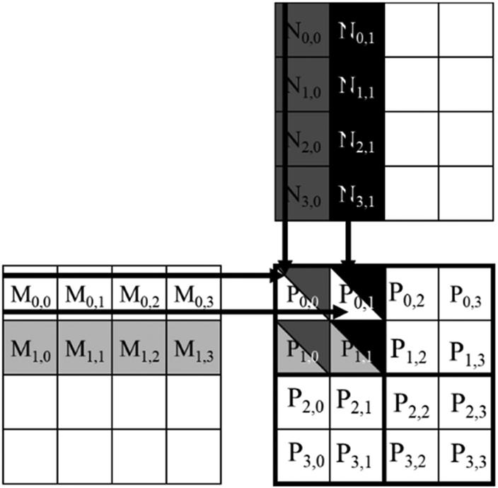
Fig. 5.6 shows the global memory accesses done by all threads in block0,0. The threads are listed in the vertical direction, with time of access increasing from left to right in the horizontal direction. Note that each thread accesses four elements of M and four elements of N during its execution. Among the four threads highlighted, there is a significant overlap in the M and N elements that they access. For example, thread0,0 and thread0,1 both access M0,0 as well as the rest of row 0 of M. Similarly, thread0,1 and thread1,1 both access N0,1 as well as the rest of column 1 of N.
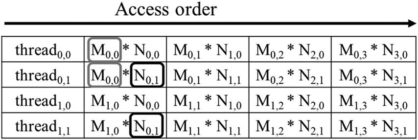
The kernel in Fig. 3.11 is written so that both thread0,0 and thread0,1 access row 0 elements of M from the global memory. If we can somehow manage to have thread0,0 and thread0,1 collaborate so that these M elements are loaded from global memory only once, we can reduce the total number of accesses to the global memory by half. In fact, we can see that every M and N element is accessed exactly twice during the execution of block0,0. Therefore if we can have all four threads collaborate in their accesses to global memory, we can reduce the traffic to the global memory by half.
The reader should verify that the potential reduction in global memory traffic in the matrix multiplication example is proportional to the dimension of the blocks that are used. With Width×Width blocks, the potential reduction of global memory traffic would be Width. That is, if we use 16×16 blocks, we can potentially reduce the global memory traffic to 1/16 of the original level through collaboration between threads.
We now present a tiled matrix multiplication algorithm. The basic idea is to have the threads collaboratively load subsets of the M and N elements into the shared memory before they individually use these elements in their dot product calculation. Keep in mind that the size of the shared memory is quite small, and one must be careful not to exceed the capacity of the shared memory when loading these M and N elements into the shared memory. This can be accomplished by dividing the M and N matrices into smaller tiles. The size of these tiles is chosen so that they can fit into the shared memory. In the simplest form, the tile dimensions equal those of the block, as illustrated in Fig. 5.7.
In Fig. 5.7 we divide M and N into 2×2 tiles, as delineated by the thick lines. The dot product calculations that are performed by each thread are now divided into phases. In each phase, all threads in a block collaborate to load a tile of M and a tile of N into the shared memory. This can be done by having every thread in a block load one M element and one N element into the shared memory, as illustrated in Fig. 5.8. Each row of Fig. 5.8 shows the execution activities of a thread. Note that time progresses from left to right. We need to show only the activities of threads in block0,0; the other blocks all have the same behavior. The shared memory array for the M elements is called Mds. The shared memory array for the N elements is called Nds. At the beginning of phase 1, the four threads of block0,0 collaboratively load a tile of M into shared memory: Thread0,0 loads M0,0 into Mds0,0, thread0,1 loads M0,1 into Mds0,1, thread1,0 loads M1,0 into Mds1,0, and thread1,1 loads M1,1 into Mds1,1. These loads are shown in the second column of Fig. 5.8. A tile of N is also loaded in a similar manner, shown in the third column of Fig. 5.8.
After the two tiles of M and N are loaded into the shared memory, these elements are used in the calculation of the dot product. Note that each value in the shared memory is used twice. For example, the M1,1 value, loaded by thread1,1 into Mds1,1, is used twice, once by thread1,0 and once by thread1,1. By loading each global memory value into shared memory so that it can be used multiple times, we reduce the number of accesses to the global memory. In this case, we reduce the number of accesses to the global memory by a factor of 2. The reader should verify that the reduction is by a factor of N if the tiles are N×N elements.
Note that the calculation of each dot product is now performed in two phases, shown as phase 1 and phase 2 in Fig. 5.8. In each phase, each thread accumulates products of two pairs of the input matrix elements into the Pvalue variable. Note that Pvalue is an automatic variable, so a private version is generated for each thread. We added subscripts just to clarify that these are different instances of the Pvalue variable created for each thread. The first phase calculation is shown in the fourth column of Fig. 5.8, and the second phase is shown in the seventh column. In general, if an input matrix is of dimension Width and the tile size is TILE_WIDTH, the dot product would be performed in Width/TILE_WIDTH phases. The creation of these phases is key to the reduction of accesses to the global memory. With each phase focusing on a small subset of the input matrix values, the threads can collaboratively load the subset into the shared memory and use the values in the shared memory to satisfy their overlapping input needs in the phase.
Note also that Mds and Nds are reused across phases. In each phase, the same Mds and Nds are reused to hold the subset of M and N elements used in the phase. This allows a much smaller shared memory to serve most of the accesses to global memory. This is because each phase focuses on a small subset of the input matrix elements. Such focused access behavior is called locality. When an algorithm exhibits locality, there is an opportunity to use small, high-speed memories to serve most of the accesses and remove these accesses from the global memory. Locality is as important for achieving high performance in multicore CPUs as in many-thread GPUs We will return to the concept of locality in Chapter 6, Performance Considerations.
We are now ready to present a tiled matrix multiplication kernel that uses shared memory to reduce traffic to the global memory. The kernel shown in Fig. 5.9 implements the phases illustrated in Fig. 5.8. In Fig. 5.9, lines 04 and 05 declare Mds and Nds, respectively, as shared memory arrays. Recall that the scope of shared memory variables is a block. Thus one version of the Mds and Nds arrays will be created for each block, and all threads of a block have access to the same Mds and Nds version. This is important because all threads in a block must have access to the M and N elements that are loaded into Mds and Nds by their peers so that they can use these values to satisfy their input needs.
Lines 07 and 08 save the threadIdx and blockIdx values into automatic variables with shorter names to make the code more concise. Recall that automatic scalar variables are placed into registers. Their scope is in each individual thread. That is, one private version of tx, ty, bx, and by is created by the runtime system for each thread and will reside in registers that are accessible by the thread. They are initialized with the threadIdx and blockIdx values and used many times during the lifetime of thread. Once the thread ends, the values of these variables cease to exist.
Lines 11 and 12 determine the row index and column index, respectively, of the P element that the thread is to produce. The code assumes that each thread is responsible for calculating one P element. As shown in line 12, the horizontal (x) position, or the column index of the P element to be produced by a thread, can be calculated as bx*TILE_WIDTH+tx. This is because each block covers TILE_WIDTH elements of P in the horizontal dimension. A thread in block bx would have before it bx blocks of threads, or (bx*TILE_WIDTH) threads; they cover bx*TILE_WIDTH elements of P. Another tx thread within the same block would cover another tx elements. Thus the thread with bx and tx should be responsible for calculating the P element whose x index is bx*TILE_WIDTH+tx. For the example in Fig. 5.7, the horizontal (x) index of the P element to be calculated by thread0,1 of block1,0 is 0*2+1=1. This horizontal index is saved in the variable Col for the thread and is also illustrated in Fig. 5.10.
Similarly, the vertical (y) position, or the row index, of the P element to be processed by a thread is calculated as by*TILE_WIDTH+ty. Going back to the example in Fig. 5.7, the y index of the P element to be calculated by thread0,1 of block1,0 is 1*2+0=2. This vertical index is saved in the variable Row for the thread. As shown in Fig. 5.10, each thread calculates the P element at the Colth column and the Rowth row. Thus the P element to be calculated by thread0,1 of block1,0 is P2,1.
Line 16 of Fig. 5.9 marks the beginning of the loop that iterates through all the phases of calculating the P element. Each iteration of the loop corresponds to one phase of the calculation shown in Fig. 5.8. The ph variable indicates the number of phases that have already been done for the dot product. Recall that each phase uses one tile of M and one tile of N elements. Therefore at the beginning of each phase, ph*TILE_WIDTH pairs of M and N elements have been processed by previous phases.
In each phase, lines 19 and 20 in Fig. 5.9 load the appropriate M and N elements, respectively, into the shared memory. Since we already know the row of M and column of N to be processed by the thread, we now turn our focus to the column index of M and row index of N. As shown in Fig. 5.10, each block has TILE_WIDTH2 threads that will collaborate to load TILE_WIDTH2 M elements and TILE_WIDTH2 N elements into the shared memory. Thus all we need to do is to assign each thread to load one M element and one N element. This is conveniently done by using the blockIdx and threadIdx. Note that the beginning column index of the section of M elements to be loaded is ph*TILE_WIDTH. Therefore an easy approach is to have every thread load an element that is tx (the threadIdx.x value) positions away from that beginning point. Similarly, the beginning row index of the section of N elements to be loaded is also ph*TILE_WIDTH. Therefore every thread loads an element that is ty (the threadIdx.y value) positions away from that beginning point.
This is precisely what we have in lines 19 and 20. In line 19, each thread loads M[Row*Width + ph*TILE_WIDTH + tx], where the linearized index is formed with the row index Row and column index ph*TILE_WIDTH + tx. Since the value of Row is a linear function of ty, each of the TILE_WIDTH2 threads will load a unique M element into the shared memory because each thread has a unique combination of tx and ty. Together, these threads will load a dark square subset of M in Fig. 5.10. In a similar way, in line 20, each thread loads the appropriate N element to shared memory using the linearized index (ph*TILE_WIDTH + ty)*Width + Col. The reader should use the small example in Figs. 5.7 and 5.8 to verify that the address calculation works correctly for individual threads.
The barrier __syncthreads() in line 21 ensures that all threads have finished loading the tiles of M and N into Mds and Nds before any of them can move forward. Recall from Chapter 4, Compute Architecture and Scheduling, that the call to __syncthreads() can be used to make all threads in a block wait for each other to reach the barrier before any of them can proceed. This is important because the M and N elements to be used by a thread can be loaded by other threads. One needs to ensure that all elements are properly loaded into the shared memory before any of the threads start to use the elements. The loop in line 23 then performs one phase of the dot product based on the tile elements. The progression of the loop for threadty, tx is shown in Fig. 5.10, with the access direction of the M and N elements along the arrow marked with k, the loop variable in line 23. Note that these elements will be accessed from Mds and Nds, the shared memory arrays holding these M and N elements. The barrier __syncthreads() in line 26 ensures that all threads have finished using the M and N elements in the shared memory before any of them move on to the next iteration and load the elements from the next tiles. Thus none of the threads would load the elements too early and corrupt the input values of other threads.
The two __syncthreads() calls in lines 21 and 26 demonstrate two different types of data dependence that parallel programmers often have to reason about when they are coordinating between threads. The first is called a read-after-write dependence because threads must wait for data to be written to the proper place by other threads before they try to read it. The second is called a write-after-read dependence because a thread must wait for the data to be read by all threads that need it before overwriting it. Other names for read-after-write and write-after-read dependences are true and false dependences, respectively. A read-after-write dependence is a true dependence because the reading thread truly needs the data supplied by the writing thread, so it has no choice but to wait for it. A write-after-read dependence is a false dependence because the writing thread does not need any data from the reading thread. The dependence is caused by the fact that they are reusing the same memory location and would not exist if they used different locations.
The loop nest from line 16 to line 28 illustrates a technique called strip-mining, which takes a long-running loop and break it into phases. Each phase involves an inner loop that executes a few consecutive iterations of the original loop. The original loop becomes an outer loop whose role is to iteratively invoke the inner loop so that all the iterations of the original loop are executed in their original order. By adding barrier synchronizations before and after the inner loop, we force all threads in the same block to focus their work on the same section of input data during each phase. Strip-mining is an important means to creating the phases that are needed by tiling in data parallel programs.3
After all phases of the dot product are complete, the execution exits the outer loop. In Line 29, all threads write to their P element using the linearized index calculated from Row and Col.
The benefit of the tiled algorithm is substantial. For matrix multiplication, the global memory accesses are reduced by a factor of TILE_WIDTH. With 16×16 tiles, one can reduce the global memory accesses by a factor of 16. This increases the compute to global memory access ratio from 0.25 OP/B to 4 OP/B. This improvement allows the memory bandwidth of a CUDA device to support a higher computation rate. For example, in the A100 GPU which has a global memory bandwidth of 1555 GB/second, this improvement allows the device to achieve (1555 GB/second)*(4 OP/B)=6220 GFLOPS, which is substantially higher than the 389 GFLOPS achieved by the kernel that did not use tiling.
Although tiling improves throughput substantially, 6220 GFLOPS is still only 32% of the device’s peak throughput of 19,500 GFLOPS. One can further optimize the code to reduce the number of global memory accesses and improve throughput. We will see some of these optimizations later in the book, while other advanced optimizations will not be covered. Because of the importance of matrix multiplication in many domains, there are highly optimized libraries, such as cuBLAS and CUTLASS, that already incorporate many of these advanced optimizations. Programmers can use these libraries to immediately achieve close to peak performance in their linear algebra applications.
The effectiveness of tiling at improving the throughput of matrix multiplication in particular and applications in general is not unique to GPUs. There is a long history of applying tiling (or blocking) techniques to improve performance on CPUs by ensuring that the data that is reused by a CPU thread within a particular time window will be found in the cache. One key difference is that tiling techniques on CPUs rely on the CPU cache to keep reused data on-chip implicitly, whereas tiling techniques on GPUs use shared memory explicitly to keep the data on-chip. The reason is that a CPU core typically runs one or two threads at a time, so a thread can rely on the cache keeping recently used data around. In contrast, a GPU SM runs many threads simultaneously to be able to hide latency. These threads may compete for cache slots, which makes the GPU cache less reliable, necessitating the use of shared memory for important data that is to be reused.
While the performance improvement of the tiled matrix multiplication kernel is impressive, it does make a few simplifying assumptions. First, the width of the matrices is assumed to be a multiple of the width of thread blocks. This prevents the kernel from correctly processing matrices with arbitrary width. The second assumption is that the matrices are square matrices. This is not always true in practice. In the next section we will present a kernel with boundary checks that removes these assumptions.
We now extend the tiled matrix multiplication kernel to handle matrices with arbitrary width. The extensions will have to allow the kernel to correctly handle matrices whose width is not a multiple of the tile width. Let’s change the small example in Fig. 5.7 to use 3×3 M, N, and P matrices. The revised example is shown in Fig. 5.11. Note that the width of the matrices is 3, which is not a multiple of the tile width (which is 2). Fig. 5.11 shows the memory access pattern during the second phase of block0,0. We see that thread0,1 and thread1,1 will attempt to load M elements that do not exist. Similarly, we see that thread1,0 and thread1,1 will attempt to access N elements that do not exist.
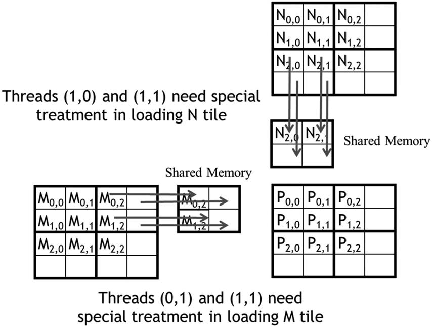
Accessing nonexisting elements is problematic in two ways. In the case of accessing a nonexisting element that is past the end of a row (M accesses by thread0,1 and thread1,1 in Fig. 5.11), these accesses will be done to incorrect elements. In our example the threads will attempt to access M0,3 and M1,3, which do not exist. So what will happen to these memory loads? To answer this question, we need to go back to the linearized layout of two-dimensional matrices. The element after M0,2 in the linearized layout is M1,0. Although thead0,1 is attempting to access M0,3, it will end up getting M1,0. The use of this value in the subsequent inner product calculation will obviously corrupt the output value.
A similar problem arises in accessing an element that is past the end of a column (N accesses by thread1,0 and thread1,1 in Fig. 5.11). These accesses are to memory locations outside the allocated area for the array. In some systems they will return random values from other data structures. In other systems these accesses will be rejected, causing the program to abort. Either way, the outcome of such accesses is undesirable.
From our discussion so far, it may seem that the problematic accesses arise only in the last phase of execution of the threads. This would suggest that we can deal with it by taking special actions during the last phase of the tiled kernel execution. Unfortunately, this is not true. Problematic accesses can arise in all phases. Fig. 5.12 shows the memory access pattern of block1,1 during phase 0. We see that thread1,0 and thread1,1 attempt to access nonexisting M elements M3,0 and M3,1, whereas thread0,1 and thread1,1 attempt to access N0,3 and N1,3, which do not exist.
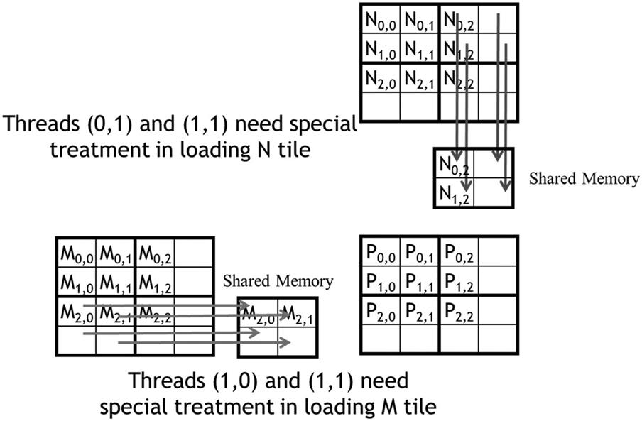
Note that these problematic accesses cannot be prevented by simply excluding the threads that do not calculate valid P elements. For example, thread1,0 in block1,1 does not calculate any valid P element. However, it needs to load M2,1 during phase 0 for other threads in block1,1 to use. Furthermore, note that some threads that calculate valid P elements will attempt to access M or N elements that do not exist. For example, as we saw in Fig. 5.11, thread0,1 of block 0,0 calculates a valid P element P0,1. However, it attempts to access a nonexisting M0,3 during phase 1. These two facts indicate that we will need to use different boundary condition tests for loading M tiles, loading N tiles, and calculating/storing P elements. A rule of thumb to follow is that every memory access needs to have a corresponding check that ensures that the indices used in the access are within the bounds of the array being accessed.
Let’s start with the boundary test condition for loading input tiles. When a thread is to load an input tile element, it should test whether the input element it is attempting to load is a valid element. This is easily done by examining the y and x indices. For example, in line 19 in Fig. 5.9, the linearized index is a derived from a y index of Row and an x index of ph*TILE_WIDTH + tx. The boundary condition test would be that both of indices are smaller than Width: Row < Width && (ph*TILE_WIDTH+tx) < Width. If the condition is true, the thread should go ahead and load the M element. The reader should verify that the condition test for loading the N element is (ph*TILE_WIDTH+ty) < Width && Col < Width.
If the condition is false, the thread should not load the element. The question is what should be placed into the shared memory location. The answer is 0.0, a value that will not cause any harm if it is used in the inner product calculation. If any thread uses this 0.0 value in the calculation of its inner product, there will not be any change in the inner product value.
Finally, a thread should store its final inner product value only if it is responsible for calculating a valid P element. The test for this condition is (Row < Width) && (Col < Width). The kernel code with the additional boundary condition checks is shown in Fig. 5.13.
With the boundary condition checks, the tile matrix multiplication kernel is just one step away from being a general matrix multiplication kernel. In general, matrix multiplication is defined for rectangular matrices: a j×k M matrix multiplied with a k×l N matrix results in a j×l P matrix. Our kernel can handle only square matrices so far.
Fortunately, it is quite easy to extend our kernel further into a general matrix multiplication kernel. We need to make a few simple changes. First, the Width argument is replaced by three unsigned integer arguments: j, k, l. Where Width is used to refer to the height of M or height of P, replace it with j. Where Width is used to refer to the width of M or height of N, replace it with k. Where Width is used to refer to the width of N or width of P, replace it with l. The revision of the kernel with these changes is left as an exercise.
Recall that in Chapter 4, Compute Architecture and Scheduling, we discussed the importance of maximizing the occupancy of threads on SMs to be able to tolerate long latency operations. The memory usage of a kernel plays an important role in occupancy tuning. While CUDA registers and shared memory can be extremely effective at reducing the number of accesses to global memory, one must be careful to stay within the SM’s capacity of these memories. Each CUDA device offers limited resources, which limits the number threads that can simultaneously reside in the SM for a given application. In general, the more resources each thread requires, the fewer the number of threads that can reside in each SM.
We saw in Chapter 4, Compute Architecture and Scheduling, how register usage can be a limiting factor for occupancy. Shared memory usage can also limit the number of threads that can be assigned to each SM. For example, the A100 GPU can be configured to have up to 164 KB of shared memory per SM and supports a maximum of 2048 threads per SM. Thus for all 2048 thread slots to be used, a thread block should not use more than an average of (164 KB)/(2048 threads)=82 B/thread. In the tiled matrix multiplication example, every block has TILE_WIDTH2 threads, and uses TILE_WIDTH2*4B of shared memory for Mds and TILE_WIDTH2*4B of shared memory for Nds. Thus the thread block uses an average of (TILE_WIDTH2*4B + TILE_WIDTH2*4B)/(TILE_WIDTH2 threads)=8 B/thread of shared memory. Therefore the tiled matrix multiplication kernel’s occupancy is not limited by the shared memory.
However, consider a kernel that has thread blocks that use 32 KB of shared memory, each of which has 256 threads. In this case, the kernel uses an average of (32 KB)/(256 threads)=132 B/thread of shared memory. With such shared memory usage, the kernel cannot achieve full occupancy. Each SM can host a maximum of only (164 KB)/(132 B/thread)=1272 threads. Therefore the maximum achievable occupancy of this kernel will be (1272 assigned threads)/(2048 maximum threads)=62%.
Note that the size of shared memory in each SM can also vary from device to device. Each generation or model of devices can have a different amount of shared memory in each SM. It is often desirable for a kernel to be able to use different amounts of shared memory according to the amount available in the hardware. That is, we may want a host code to dynamically determine the size of the shared memory and adjust the amount of shared memory that is used by a kernel. This can be done by calling the cudaGetDeviceProperties function. Assume that variable &devProp is passed to the function. In this case, the field devProp.sharedMemPerBlock gives the amount of shared memory that is available in each SM. The programmer can then determine the amount of shared memory that should be used by each block.
Unfortunately, the kernels in Figs. 5.9 and 5.13 do not support any dynamic adjustment of shared memory usage by the host code. The declarations that are used in Fig. 5.9 hardwire the size of its shared memory usage to a compile-time constant:
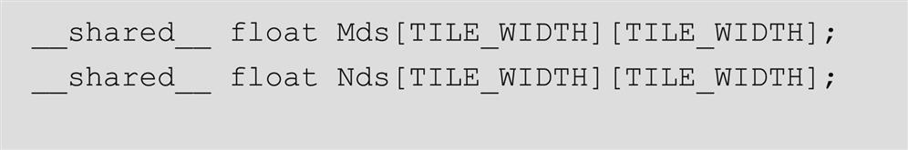
That is, the size of Mds and Nds is set to be TILE_WIDTH2 elements, whatever the value of TILE_WIDTH is set to be at compile time. Since the code contains
both Mds and Nds will have 256 elements. If we want to change the size of Mds and Nds, we need to change the value of TILE_WIDTH and recompile the code. The kernel cannot easily adjust its shared memory usage at runtime without recompilation.
We can enable such adjustment with a different style of declaration in CUDA by adding a C extern keyword in front of the shared memory declaration and omitting the size of the array in the declaration. Based on this style, the declarations for Mds and Nds need to be merged into one dynamically allocated array:
Since there is only one merged array, we will also need to manually define where the Mds section of the array starts and where the Nds section starts. Note that the merged array is one-dimensional. We will need to access it by using a linearized index based on the vertical and horizontal indices.
At runtime, when we call the kernel, we can dynamically configure the amount of shared memory to be used for each block according to the device query result and supply that as a third configuration parameter to the kernel call. For example, the revised kernel could be launched with the following statements:
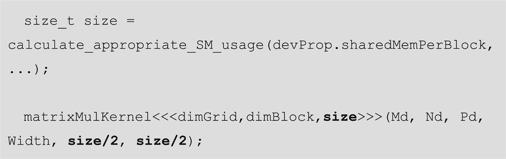
where size_t is a built-in type for declaring a variable to hold the size information for dynamically allocated data structures. The size is expressed in number of bytes. In our matrix multiplication example, for a 16×16 tile, we have a size of 2×16×16×4=2048 bytes to accommodate both Mds and Nds. We have omitted the details of the calculation for setting the value of size at runtime and leave it as an exercise for the reader.
In Fig. 5.14 we show how one can modify the kernel code in Figs. 5.9 and 5.11 to use dynamically sized shared memory for the Mds and Nds arrays. It may also be useful to pass the sizes of each section of the array as arguments into the kernel function. In this example we added two arguments: The first argument is the size of the Mds section, and the second argument is the size of the Nds section, both in terms of bytes. Note that in the host code above, we passed size/2 as the values of these arguments, which is 1024 bytes. With the assignments in lines 06 and 07, the rest of the kernel code can use Mds and Nds as the base of the array and use a linearized index to access the Mds and Nds elements. For example, instead of using Mds[ty][tx], one would use Mds[ty*TILE_WIDTH+tx].
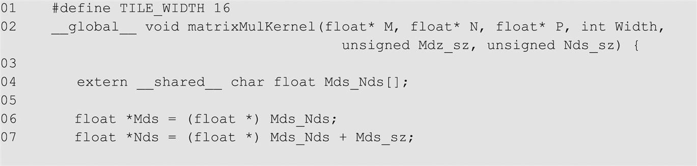
In summary, the execution speed of a program in modern processors can be severely limited by the speed of the memory. To achieve good utilization of the execution throughput of a CUDA devices, one needs to strive for a high compute to global memory access ratio in the kernel code. If the ratio is low, the kernel is memory-bound. That is, its execution speed is limited by the rate at which its operands are accessed from memory.
CUDA provides access to registers, shared memory, and constant memory. These memories are much smaller than the global memory but can be accessed at much higher speed. Using these memories effectively requires redesign of the algorithm. We use matrix multiplication as an example to illustrate tiling, a popular strategy to enhance locality of data access and enable effective use of shared memory. In parallel programming, tiling uses barrier synchronization to force multiple threads to jointly focus on a subset of the input data at each phase of the execution so that the subset data can be placed into these special memory types to enable much higher access speed.
However, it is important for CUDA programmers to be aware of the limited sizes of these special types of memory. Their capacities are implementation dependent. Once their capacities have been exceeded, they limit the number of threads that can be executing simultaneously in each SM and can negatively affect the GPU’s computation throughput as well as its ability to tolerate latency. The ability to reason about hardware limitations when developing an application is a key aspect of parallel programming.
Although we introduced tiled algorithms in the context of CUDA C programming, it is an effective strategy for achieving high-performance in virtually all types of parallel computing systems. The reason is that an application must exhibit locality in data access to make effective use of high-speed memories in these systems. For example, in a multicore CPU system, data locality allows an application to effectively use on-chip data caches to reduce memory access latency and achieve high performance. These on-chip data caches are also of limited size and require the computation to exhibit locality. Therefore the reader will also find the tiled algorithm useful when developing a parallel application for other types of parallel computing systems using other programming models.
Our goal for this chapter was to introduce the concept of locality, tiling, and different CUDA memory types. We introduced a tiled matrix multiplication kernel using shared memory. We further studied the need for boundary test conditions to allow for arbitrary data dimensions in applying tiling techniques. We also briefly discussed the use of dynamically sized shared memory allocation so that the kernel can adjust the size of shared memory that is used by each block according to the hardware capability. We did not discuss the use of registers in tiling. We will explain the use of registers in tiled algorithms when we discuss parallel algorithm patterns in Part II of the book.
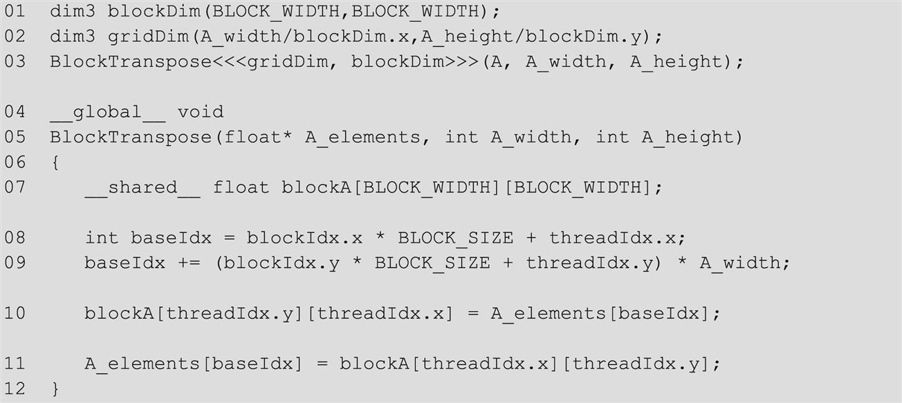
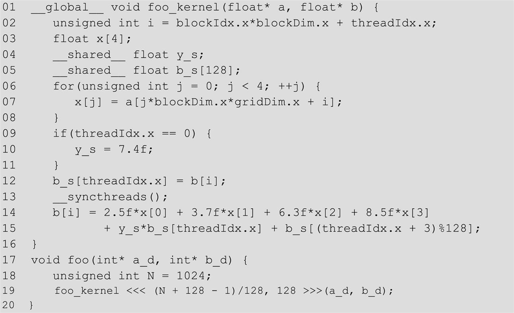